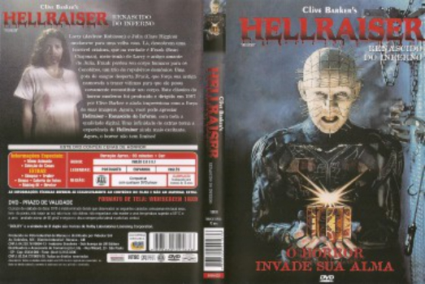

Hellraiser - Renascido do Inferno (1987)


He'll tear your soul apart.

Avaliação (TMDb):


6.9/10 (1.5K votos)
Avaliação (Usuário):
Outro Título:Hellraiser
País:United Kingdom, 94 minutos
Idiomas falados:Inglês
Gênero(s):Terror
Diretor(s):Clive Barker
Codec:MPEG-2 (DVD)
Número: 1642
Sinopse:
Uma esposa infiel encontra o zumbi de seu amante inoperante, que está sendo perseguido por demônios depois que ele escapou de seu inferno sado-masoquista.
Elenco:
Ashley Laurence, Andrew Robinson, Clare Higgins, Sean Chapman, Oliver Smith, Robert Hines, Doug Bradley, Grace Kirby, Nicholas Vince, Simon Bamford
Tipo de mídia: DVD5,
Legendas: Inglês, Espanhol, Português
Alugado: Não
Tela: 1.66:1